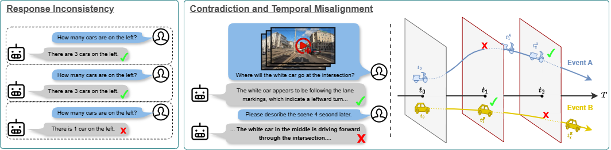
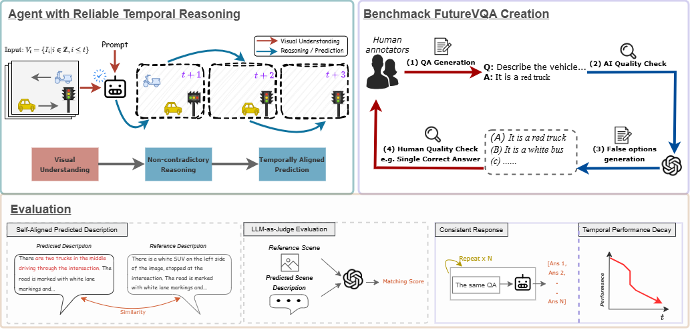
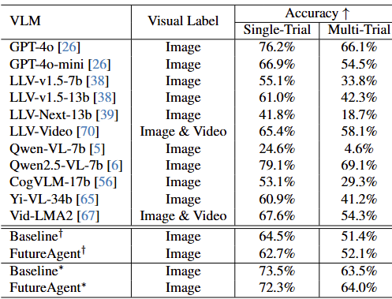
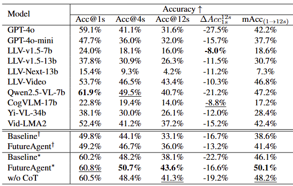

A reliable driving assistant should provide consistent responses based on temporally grounded reasoning derived from observed information. In this work, we investigate whether Vision-Language Models (VLMs), when applied as driving assistants, can response consistantly and understand how present observations shape future outcomes, or whether their outputs merely reflect patterns memorized during training without temporally grounded reasoning. While recent efforts have integrated VLMs into autonomous driving, prior studies typically emphasize scene understanding and instruction generation, implicitly assuming that strong visual interpretation naturally enables consistant future reasoning and thus ensures reliable decision-making, a claim we critically examine. We focus on two major challenges limiting VLM reliability in this setting: response inconsistency, where minor input perturbations yield different answers or, in some cases, responses degenerate toward near-random guessing, and limited temporal reasoning, in which models fail to reason and align sequential events from current observations, often resulting in incorrect or even contradictory responses. Moreover, we find that models with strong visual understanding do not necessarily perform best on tasks requiring temporal reasoning, indicating a tendency to over-rely on pretrained patterns rather than modeling temporal dynamics. To address these issues, we adopt existing evaluation methods and introduce FutureVQA, a human-annotated benchmark dataset specifically designed to assess future scene reasoning. In addition, we propose a simple yet effective self-supervised tuning approach with chain-of-thought reasoning that improves both consistency and temporal reasoning without requiring temporal labels.

To evaluate model reliability, we introduce the FutureVQA benchmark, a human-annotated dataset of 2.7k question-answer pairs tailored to diverse driving scenes. Our evaluation framework focuses on grounding reasoning through five key metrics:
(1) Multi-trial Consistency, which measures the accuracy drop and flip rate when answer options are shuffled to filter out random guessing
(2) Self-Aligned Comparison, assessing how closely a model's predicted future description matches a reference generated from the actual ground-truth frame
(3) Temporal Performance Decay, using metrics like Normalized Drop Ratio (NDR) to quantify reliability as the prediction horizon extends to 12 seconds
(4) LLM-as-Judge, utilizing GPT-4o to score the objective accuracy of spatial and semantic details ;

we evaluate the performance of various VLMs on our proposed FutureVQA benchmark using the corresponding image for each question-answer pair as input—i.e., no future prediction is required. This setup serves both as a baseline for future scene reasoning and as a diagnostic to assess the consistency and reliability of VLM responses. Notably, we observe that all tested VLMs exhibit a significant drop in accuracy when the answer options are simply shuffled, despite the semantic content of the questions remaining unchanged. The most substantial decline occurs with CogVLM, which drops by 23.8%, followed by LLaVA-NeXT 13B with a 23.1% decrease.

Accuracy (Acc) of models on our VQA benchmark at different future time frames. All accuracy values are evaluated across multiple trials to minimize the influence of random chance. The result suggest that models like GPT-4o, while showing strong ability in visual understdaning, fail to maintain consistent future scene reasoning across different time interval.
@inproceedings{chang2026probing,
title={Probing the Reliability of Driving VLMs: From Inconsistent Responses to Grounded Temporal Reasoning},
author={Chang, Chun-Peng and Wang, Chen-Yu and Caesar, Holger and Pagani, Alain},
booktitle={Proceedings of the IEEE/CVF Conference on Computer Vision and Pattern Recognition},
pages={644--654},
year={2026}
}